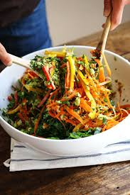

Thai Salad

Description
Chopped Thai Salad with Sesame Garlic Dressing
Ingredients
- 5 cups Baby kale
- 2 Bell peppers
- 3 Carrots, large
- 1 cup Cilantro
- 16 oz Edammame, frozen
- 3 Garlic cloves
- 3 Green onions
- 2 tbsp Honey
-
- Lemongrass paste
- Lime juice
- Soy sauce, low sodium
- Canola oil
- Vinegar
- Sesame oil
- Cashews
- Water
Steps
- Puree all the dressing ingredients in a food processor until smooth. Taste and adjust to fit your preferences. Transfer to a dressing jar and rinse the food processor out for use later.
- Cook the edamame by boiling it for 3-5 minutes in a pot of boiling water. Drain and allow it to cool. Meanwhile, slice up the kale, carrots, peppers, cilantro leaves, and green onions into thin strips or shreds.
- Place the cooked edamame in the food processor and pulse 5 times to get a minced texture. Transfer to a bowl and repeat the same process for the cashews. Toss the kale, carrots, peppers, cilantro, green onions, edamame, and cashews together until well combined. Drizzle with the dressing, toss gently a few times, and serve immediately.